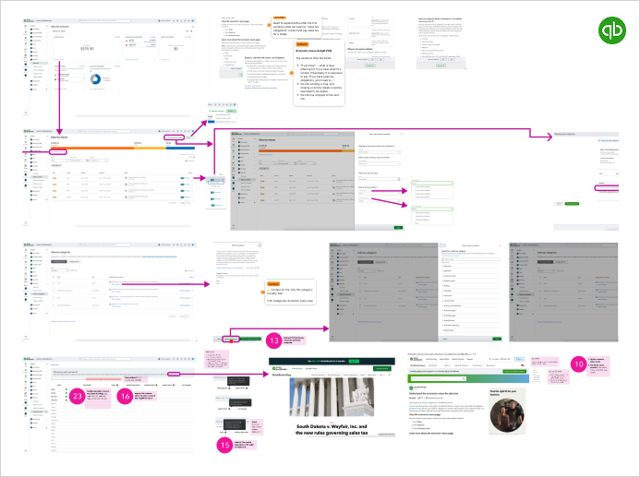

Project
Intuit QuickBooks US Sales Tax – E2E Content Audit
The problem
Our customers don't always use the QuickBooks Sales Tax functionality to its fullest extent so that it supports their sales tax compliance workflows.
The challenge
Our sales tax marketing pages hadn't been touched for years, and neither had some of our sales tax product pages.
What I did
- Drove an end-to-end audit of how Sales Tax is exposed to customers and mapped the journey end to end: across our marketing page, in the product itself, and on our help and support pages.
- Uncovered outdated, missing and incorrect content across marketing, product and support pages using data (page views, customer support data and product analysis).
- Rallied a "tiger team" (a cross-functional group of compliance experts and content writers) to fix things end to end.
- Ramped up our external marketing agency through knowledge-sharing, by initiating and writing a tailored "quick guide" to sales tax for them to expedite the correction of marketing information.
Outcome
- Increased E2E discoverability by driving improved and accurate content across the Sales Tax app.
- These fixes increased customer confidence and reduced support calls.